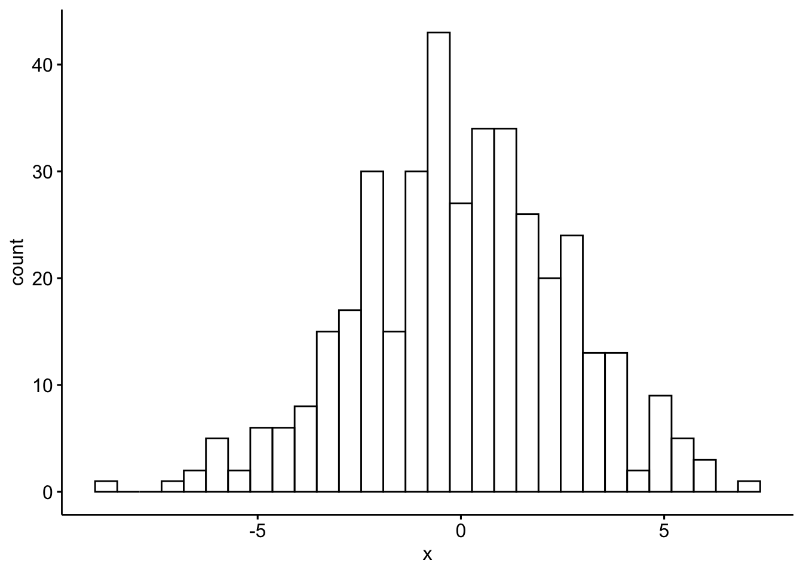
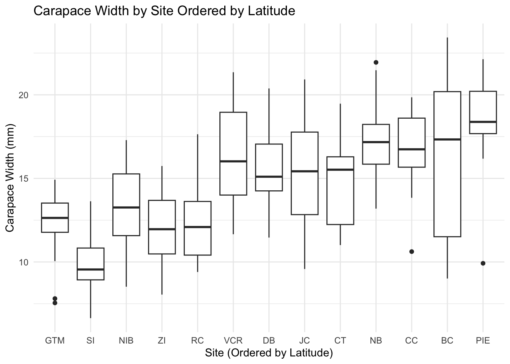
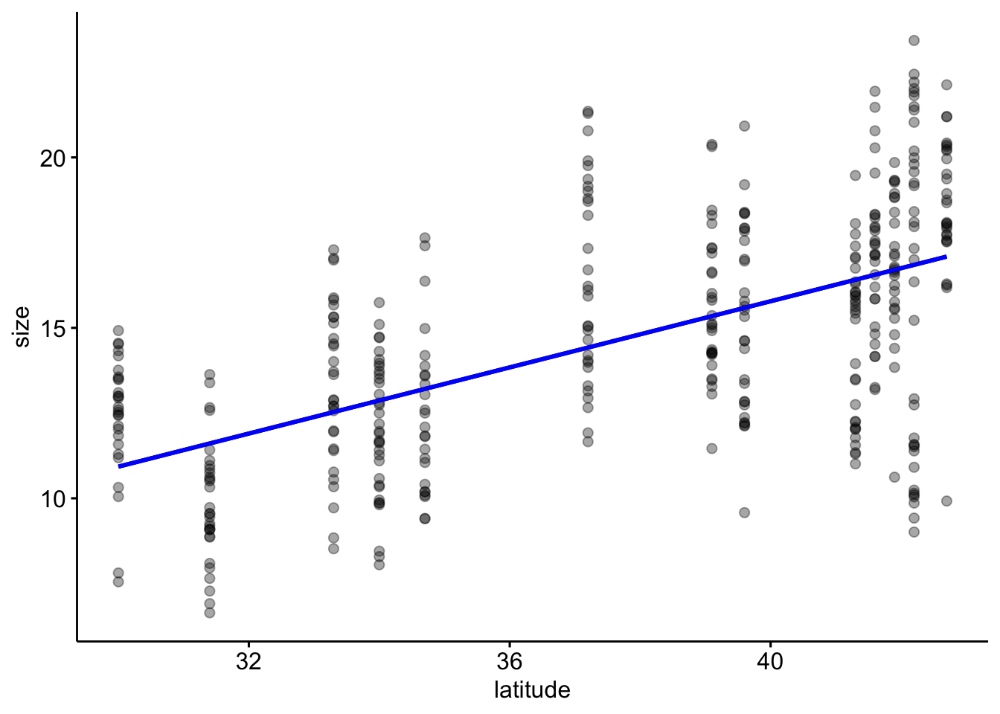

Using github PAT from envvar GITHUB_PAT. Use `gitcreds::gitcreds_set()` and unset GITHUB_PAT in .Renviron (or elsewhere) if you want to use the more secure git credential store instead.
Skipping install of 'lterdatasampler' from a github remote, the SHA1 (ff784768) has not changed since last install.
Use `force = TRUE` to force installation
── Conflicts ────────────────────────────────────────── tidyverse_conflicts() ──
✖ dplyr::filter() masks stats::filter()
✖ dplyr::lag() masks stats::lag()
ℹ Use the conflicted package (<http://conflicted.r-lib.org/>) to force all conflicts to become errors
Loading required package: carData
Attaching package: 'car'
The following object is masked from 'package:dplyr':
recode
The following object is masked from 'package:purrr':
some
library(visdat)?and_vertebrates
# Exercises Part 1 # First clean the dataset to create the contingency table fromsalamander_clean <- and_vertebrates %>%#filter coastal salamandersfilter(species =="Coastal giant salamander") %>%drop_na(unittype, section)cont_table <-table(salamander_clean$section, salamander_clean$unittype)chisq.test(cont_table)
Warning in chisq.test(cont_table): Chi-squared approximation may be incorrect
# report: The chi-square test for independence revealed a significant relationship between forest type and channel unit type for Coastal giant salamander abundance (p < 0.001). This result suggests that salamander abundance varies significantly across different channel unit types depending on the forest type.cc_weight <- salamander_clean %>%filter(section =="CC") %>%pull(weight_g)og_weight <- salamander_clean %>%filter(section =="OG") %>%pull(weight_g)var.test(cc_weight, og_weight)
F test to compare two variances
data: cc_weight and og_weight
F = 0.82901, num df = 3027, denom df = 3309, p-value = 1.439e-07
alternative hypothesis: true ratio of variances is not equal to 1
95 percent confidence interval:
0.7732148 0.8889213
sample estimates:
ratio of variances
0.8290065
# The F-test conducted was done to compare coastal giant salamander biomass between clear-cut and old-growth forest types. The Test result (F = 0.829, p < 0.001) shows a significant difference in variances. Biomass variability was lower in clea-cut forests. #correlation test between snout to fork and weight (bodymass). weight is weight_g and snout to fork is length 1correlation <- and_vertebrates %>%filter(species =="Coastal giant salamander") %>%drop_na(length_1_mm, weight_g)cor.test(log(salamander_clean$length_1_mm), log(salamander_clean$weight_g))
Pearson's product-moment correlation
data: log(salamander_clean$length_1_mm) and log(salamander_clean$weight_g)
t = 474.86, df = 6327, p-value < 2.2e-16
alternative hypothesis: true correlation is not equal to 0
95 percent confidence interval:
0.9855702 0.9869159
sample estimates:
cor
0.9862594
# The results indicate a strong positive correlation between weight and length of Coastal giant salamanders (r = 0.986).
Call:
aov(formula = size ~ site, data = pie_crab)
Terms:
site Residuals
Sum of Squares 2172.376 2626.421
Deg. of Freedom 12 379
Residual standard error: 2.632465
Estimated effects may be unbalanced
gghistogram(res_aov$residuals)
Warning: Using `bins = 30` by default. Pick better value with the argument
`bins`.

#perform Welch's ANOVAoneway.test(size ~ site, data = pie_crab, var.equal =FALSE)
One-way analysis of means (not assuming equal variances)
data: size and site
F = 39.108, num df = 12.00, denom df = 145.79, p-value < 2.2e-16
# Filter a subset of the sitespie_sites <- pie_crab |>filter(site %in%c("GTM", "DB", "PIE"))# Check for equal varianceleveneTest(size ~ site, data = pie_sites)
Warning in leveneTest.default(y = y, group = group, ...): group coerced to
factor.
Levene's Test for Homogeneity of Variance (center = median)
Df F value Pr(>F)
group 2 0.548 0.5802
83
# are variances equal? if yes, proceed w ANOVA# ANOVA for the data subset:pie_anova <-aov(size ~ site, data = pie_sites)# View the ANOVA results summary(pie_anova)
Df Sum Sq Mean Sq F value Pr(>F)
site 2 521.5 260.75 60.02 <2e-16 ***
Residuals 83 360.6 4.34
---
Signif. codes: 0 '***' 0.001 '**' 0.01 '*' 0.05 '.' 0.1 ' ' 1
# post-hoc Tukey HSDTukeyHSD(pie_anova)
Tukey multiple comparisons of means
95% family-wise confidence level
Fit: aov(formula = size ~ site, data = pie_sites)
$site
diff lwr upr p adj
GTM-DB -3.200786 -4.507850 -1.893722 3.0e-07
PIE-DB 2.899929 1.592865 4.206992 2.9e-06
PIE-GTM 6.100714 4.771306 7.430123 0.0e+00
ggplot(pie_crab, aes(x =reorder(site, latitude), y = size)) +geom_boxplot() +labs(x ="Site (Ordered by Latitude)",y ="Carapace Width (mm)",title ="Carapace Width by Site Ordered by Latitude" ) +theme_minimal()

water_lm <-lm(water_temp_sd ~ size, data = pie_crab)pie_crab %>%ggscatter(x ='latitude', y ='size', alpha = .35, add ="reg.line") +geom_smooth(method ="lm", se =FALSE, color ="blue") # Adding the linear model
`geom_smooth()` using formula = 'y ~ x'

# part 2 qustion 3: multiple linear regression#check for correlationpie_corr <- pie_crab %>%select(latitude, air_temp_sd, water_temp_sd) %>%cor(use ="complete.obs") %>%round(2) # Rounds to 2 decimal places for readabilityprint(pie_corr)
latitude air_temp_sd water_temp_sd
latitude 1.00 0.79 0.04
air_temp_sd 0.79 1.00 0.41
water_temp_sd 0.04 0.41 1.00
# the results of the correlation check show that latitude is strongly positively correlated with air temp sd, air temp sd is moderately positively correlated with water temp sd, and latitude has a very weak correlation with water temp sd. pie_mlm <-lm(size ~ latitude + air_temp_sd + water_temp_sd, data = pie_crab)summary(pie_mlm)
Call:
lm(formula = size ~ latitude + air_temp_sd + water_temp_sd, data = pie_crab)
Residuals:
Min 1Q Median 3Q Max
-7.7515 -1.8897 0.0506 1.9301 6.6746
Coefficients:
Estimate Std. Error t value Pr(>|t|)
(Intercept) -3.96880 1.54818 -2.564 0.0107 *
latitude 0.55940 0.06413 8.723 <2e-16 ***
air_temp_sd -0.41713 0.30559 -1.365 0.1730
water_temp_sd 0.15927 0.16174 0.985 0.3254
---
Signif. codes: 0 '***' 0.001 '**' 0.01 '*' 0.05 '.' 0.1 ' ' 1
Residual standard error: 2.832 on 388 degrees of freedom
Multiple R-squared: 0.3516, Adjusted R-squared: 0.3466
F-statistic: 70.13 on 3 and 388 DF, p-value: < 2.2e-16
#This regression model shows that latitude has a significant positive effect on size, while air temp and water temp do not. The model Explains about 35% of variance in size.